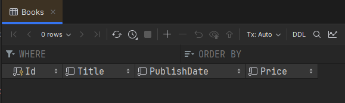
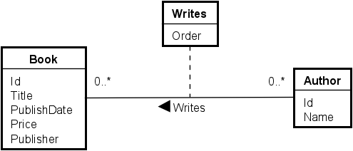

- 1 Introduction
- 2 Add Packages
- 3 Add db tools
- 4 Add DbContext
- 5 Migrations
- 6 Entities
- 7 Navigation Properties
- 8 Primary Keys
- 9 1-1 relationships
- 10 1-many relationships
- 11 Many-many relationships
- 12 Relationship attributes
- 13 Manipulating the database
Introduction
This guide aims to explain:
- How to add EFC to your project
- How to configure domain entities by EFC convention
- How to interact with the DbSets of EFC
The Example
I have stolen politely borrowed the example from the book "Entity Framework Core in Action" by Jon P Smith.
It resembles a book store, with books, authors, book categories, and reviews. The domain model is simple, but it's enough to show the basics of EFC.
It also covers each of the relevant relationships:
- One-to-one
- One-to-many
- Many-to-many
- Many-to-many with relationships attributes
Here is the ER diagram:

The Book is the center. It belongs is described by multiple Categories (e.g. Sci-Fi, Romance, Autobiography, etc), has one or more Author(s), and can have multiple Reviews.
Sometimes the Book is on sale, in which case there is a PriceOffer.
A Book can be written by multiple Authors, in which case we might want to keep track of the order of the authors for this specific Book. That's the purpose of the Writes::Order attribute.
For example, the book "BDD in Action" is written by two authors, and the order is important, because the first author is the main author. If we also include the Foreword author, we might want to list him last.
By Convention?
What does this mean?
EFC has 3 ways to configure the domain model:
- By convention
- By attributes
- By fluent API
We will focus on the first method, it is the simplest.
It means, that if we follow a set of rules when naming our classes and properties, EFC will figure out the relationships between the entities, and primary, and foreign keys.
This convention makes it easy to get started, because EFC will do most of the work for us.
Sometimes, though, we need to override the convention, or be explicit,
because EFC cannot figure out the relationship or property by itself. In these cases, we can use the other two methods.
I will not cover these in this guide, other than how to define primary keys.
You can do a lot of configuration with the fluent API, which will be introduced in my elective course: Domain Centric Architecture (DCA).
Source code
The code for this guide can be found in my GitHub repository here.... // TODO: Add link
Adding packages to the project
I assume you have a project, probably a class libary, that you want to add EFC to.
Open NuGet package manager
Open NuGet package manager, either:
- Alt + Shift + 7, or
- Menu: View -> Tool windows -> NuGet, or
- Click the NuGet icon on the lower left icon bar.
Add packages
You must add the following packages to your project:
- Microsoft.EntityFrameworkCore
- Microsoft.EntityFrameworkCore.Design
Then you need a specific package for your database provider. For example, if you use SQLite, add:
- Microsoft.EntityFrameworkCore.Sqlite
If you want to use Postgres, that's also possible. You need to google the package name for that.
CLI Tools
Various actions against EFC are done through the CLI tools. The tools are installed as a global tool, so you can use them from any project. Therefore, this needs only be done once.
Install the tools
Open then terminal and run the following command:
dotnet tool install -g dotnet-ef
If it's a long time ago you installed the tools, you might want to update them. Run the following command:
dotnet tool update -g dotnet-ef
Add DbContext
The DbContext subclass is your gateway to the database.
Create such a class, call it whatever you want. AppContext is a good start.
Here's the initial class.
public class AppContext : DbContext
{
protected override void OnConfiguring(DbContextOptionsBuilder optionsBuilder)
{
optionsBuilder.UseSqlite("Data Source = bookstore.db");
}
}
The OnConfiguring method is where you (can) specify the database provider and connection string. With SQLite we just point to a file, i.e. bookstore.db.
In this case the connection string is hardcoded, and you may prefer to put it in a configuration file. It should be easy to google how to do this.
Later, as we start configuring the domain model, we will add DbSet properties to this class. Each DbSet represents a table in the database.
What is a migration
Your domain model probably evolves over time, and your database should be kept in sync.
A migration is an update to the database, so whenever you change your domain model, you should create a migration. We will do this continuously throughout this tutorial.
Each migration is like a checkpoint in time, describing changes to the database.
Add migration
A new migration is added through the terminal. You must be located in the same project as your DbContext. Then the command is:
dotnet ef migrations add <MigrationName>
The <MigrationName> is a name you choose, and it should be descriptive of the changes you have made. For example, if you add a new entity, you could name the migration AddAuthorEntity.
Apply migration
When you have a migration, you probably want to apply it to the database, so the changes are made. This is done with the following command:
dotnet ef database update
This command will look at the *Snapshot.cs class, and the migrations, and figure out which migrations to apply, to get the database up to date.
This means, you may add multiple migrations, and then apply them all at once.
Entities
In order to keep the following steps simpler, we will first implement the entities without any relationships. We will add the relationships in the following steps.
I am being lazy, and I have put all my entities into the same file. Generally you probably want an Entities directory, with a file per entity class.
Conventions
As mentioned previously, EFC follows a set of convetions/rules to automatically configure everything. Below is a list of the conventions we will follow.
Public properties
Generally, you will want to use properties with both set and get, either public or private. For example:
public string Name { get; set; }
public string Text { get; private set; }
EFC should discover both public and private properties by default.
Private constructor
You may have a constructor on your entity class.
If it takes in arguments for all properties, it should be fine.
If it takes in arguments for some properties, you need to also include a private no-argument constructor, like this:
private Book() { } // Used by EFC
EFC will by default instantiate your entity with the private constructor, then use the properties to set the values.
The constructor with all arguments may not be convenient though, as you may discover later.
Primary Key
A property of type int named Id will be the primary key.
Alternatively, the name can also by <class-name>Id. For example, BookId.
EFC will automatically configure this property as the primary key.
If you name your primary key something else, or use a type other than int, you will need to configure this with the Fluent API.
See step 8.
Foreign Key
Foreign keys are included in the database, and are used to link entities together. This is standard relational database.
They are automatically created by EFC when you have a navigation property.
I will introduce navigation properties in the next step. We will use them when setting up relationships.
You may sometimes optionally include a property to act as an explicit foreign key on the entity.
This is not always required, but can be useful in some cases.
When doing this, the name of the property should be <navigation-property-name>Id. For example, if you have a navigation property called Author on the Book, the foreign key property should be AuthorId.
Entities
Below you will find the initial code for each entity, without the relationships specified.
Book
Here's the Book entity.
public class Book
{
public int Id { get; set; }
public string Title { get; set; } = null!;
public DateOnly PublishDate { get; set; }
public decimal Price { get; set; }
}
The Id property is autamatically configured as the primary key.
The Title property is a string, and cannot be null. I assign it to null! to suppress the null warning from the compiler.
The PublishDate is a DateOnly.
The Price is a decimal.
PriceOffer
Here's the PriceOffer entity.
public class PriceOffer
{
public int Id { get; set; }
public decimal NewPrice { get; set; }
public string PromotionalText { get; set; } = null!;
}
Nothing new here.
Author
Here's the Author entity.
public class Author
{
public int Id { get; set; }
public string Name { get; set; } = null!;
}
Review
And the Review entity.
public class Review
{
public int Id { get; set; }
public int Rating { get; set; }
public string VoterName { get; set; } = null!;
public string? Comment { get; set; }
}
Here we have a nullable string. This tells EFC to configure the corresponding column in the database as nullable. Otherwise the default is that the value is required, or NOT NULL.
Category
And the Category entity.
public class Category
{
public string Name { get; set; } = null!;
}
This time we don't have an int Id property.
We must then explicitly tell EFC that the Name property is the primary key. We will do this later.
Writes
Finally, the Writes relationship attribute.
public class Writes
{
public int Order { get; set; }
}
There are currently no keys on this. This will require a bit of configuration later, because the standard approach is to use a composite key, from the foreign keys to Book and Author.
What is a navigation property?
A navigation property is just a reference to another entity. A normal association from one class to another. What makes it a navigation property is just that EFC knows about it, and we can use it to navigate from one entity to another. We will see this when querying data later on.
Navigation properties are generally how we define relationships in EFC, when we do it by convention.
If an entity needs a relationship to another, we add a navigation property to the entity. I.e. an association.
If the relationship is "many", we add a navigation property of type List<T> (or some other collection type).
For 1:1 and 1:* cases, we only have to put the navigation property in one of the entities.
For the *:* case, we need to put a collection navigation property in both entities.
Generally though, it can be a good idea to put the navigation property in both entities, to make it easier to navigate in both directions.
Foreign keys
We can also include a foreign key property. Sometimes this make it easier to work with the relationship. It is necessary for the 1:1 relationship. Otherwise it is optional.
Example
Here's an example where ClassA has a reference to ClassB.
class ClassA
{
public int Id { get; set; }
public ClassB ClassB { get; set; } // Navigation property
}
class ClassB
{
public int Id { get; set; }
}
This is enough to tell EFC that there is a relationship between ClassA and ClassB.\
We can add a foreign key property to ClassA like this:
class ClassA
{
public int Id { get; set; }
public int ClassBId { get; set; } // Foreign key
public ClassB ClassB { get; set; } // Navigation property
}
When doing this, the name of the property should be <navigation-property-name>Id.
For example, if you have a navigation property called Author on the Book, the foreign key property should be AuthorId.
It is a balance between how much you want to "pollute" your entities, and how flexible they are to work with.
It is often more convenient to have all the foreign key properties, and navigation properties you can.
Primary keys
As mentioned, if an entity class has a property named Id or <classname>Id of type int,
EFC will automatically treat it as the primary key.
However, sometimes you may want another type of primary key, or just name it differently.
Maybe your User has an Email property, and you want to use that as the primary key.
In our example, the Category entity has a Name property, which we want to use as the primary key.
Defining single attribute primary key
It can be defined either with an attribute, like this:
public class Category
{
[Key]
public string Name { get; set; } = null!;
}
Or with the Fluent API, like this:
protected override void OnModelCreating(ModelBuilder modelBuilder)
{
modelBuilder.Entity<Category>().HasKey(c => c.Name);
}
This method above goes into the DbContext sub-class, i.e. the AppContext in our example. The method is called when creating a migration, and we can configure A LOT of things here.
In the above case, we just use the ModelBuilder class to say that the Entity of type Category has a primary key, which is the Name property.
Personally, I prefer the Fluent API approach, as it keeps the entity classes cleaner, and the configuration in one place. The Fluent API is also more powerful, so as your model grows, it is more convenient if all configuration is in one place, rather than split between attributes and Fluent API.
Defining composite primary key
Sometimes you need multiple properties/attributes to be included in the primary key. In our example, the Writes relationship attribute will need this.
In step 12 I update the Writes class to include foreign keys to AuthorId and BookId. These are used in the composite primary key.
Here is the updated OnModelCreating method after step 12:
protected override void OnModelCreating(ModelBuilder modelBuilder)
{
modelBuilder.Entity<Category>()
.HasKey(c => c.Name);
modelBuilder.Entity<Writes>()
.HasKey(w => new { w.BookId, w.AuthorId });
}
The second statement says that the Writes entity has a primary key consisting of WritesBookId and WritesAuthorId.
1:1 relationships
In this section, we will cover the one-to-one relationships.
From the ER diagram, we can see that the Book and PriceOffer entities have a one-to-one relationship.
The Book has a price, but sometimes it's on sale, in which case there will be a PriceOffer instance, with a NewPrice
and a PromotionalText.
Whenever the sale ends, the PriceOffer is removed, and the Book's price is the regular price. Yes, this is a simple
example, but it's enough to show the concept.
Here's the part of the diagram, we will focus on:

Implementing the relationship
Let's have a look at the Book and PriceOffer entities, and how we can connect them.
I am going to include navigation properties in both directions.
For the 1:1 relationship, you also have to explicitly define the foreign key, otherwise EFC will not be able to figure out which table should contain the foreign key.
The foreign key should be on the dependent side (optional side), which is the PriceOffer side in this case.
Here are the updated classes:
public class Book
{
public int Id { get; set; }
public string Title { get; set; } = null!;
public DateOnly PublishDate { get; set; }
public decimal Price { get; set; }
public PriceOffer? PriceOffer { get; set; } // Navigation property
}
public class PriceOffer
{
public int Id { get; set; }
public decimal NewPrice { get; set; }
public string PromotionalText { get; set; } = null!;
public int BookId { get; set; } // Foreign key
public Book Book { get; set; } = null!; // Navigation property
}
Notice the PriceOffer property is nullable. We need to make it nullable, because the relationship is optional. Notice
the 0..1 in the diagram.
Conversely, the BookId and Book properties on PriceOffer are not nullable, because the relationship is required from
the PriceOffer side.
I only have a foreign key on the PriceOffer side, as this is the common approach in relational databases. The Book side
is optional, and the PriceOffer side is required.
This should be enough for EFC to figure things out.
Add DbSets
Now, let's add the DbSets to the BookContext class.
I update the class to this:
public class AppContext : DbContext
{
public DbSet<Book> Books => Set<Book>();
public DbSet<PriceOffer> PriceOffers => Set<PriceOffer>();
protected override void OnConfiguring(DbContextOptionsBuilder optionsBuilder)
{
optionsBuilder.UseSqlite("Data Source = bookstore.db");
}
}
The DbSetpublic DbSet<Book> Books { get; set; }, but I don't get a null warning, when I do the above.
It says that when accessing Books, we call the Set
Create a migration
Time to create a migration. I call mine BookAndPriceOffer.
This was the first migration, and we get a Migrations directory, with two classes inside:

The 20241003073530_BookAndPriceOffer class contains the migration code, i.e. what to do to the database to make it match the model.
The AppContextModelSnapshot class contains the model snapshot, which is a snapshot of the current model.
It keeps track of the "version" or state of the database, so when new migrations are created, EFC knows what to do.
Generally, we don't need to look into these files, but you might inspect the first file, to verify that the migration looks correct.
Update database
Run the command to update the database.
You get the new bookstore.db file, which is your SQLite database. Double click it, to set up a connection, so we can inspect and interact with it through the database view.
Inspect the result. You can see this in the migration file above, but sometimes it's easier to see the outcome in the database.
This means, however, it's more complicated to undo, if the result is not as expected.
Here are my two tables from the new migration.
Books table:

And PriceOffer table:

No data yet, but I do get the columns I expect. We can see the BookId column on the PriceOffer table, which is the foreign key.
You messed up?
Sometimes you mess up a migration or application to the database. For your case as a student, it's simpler to just delete the Migrations directory and the bookstore.db file.
This will obviously delete all data, but it's a simple way to start over.\
Alternatively, there are ways to undo migration applications, or to remove the latest migration if it has not yet been applied.
This is done with commands in the terminal. I leave it up to you to google this, if you need it. However, it's not always possible to undo an applied migration.
1:* relationships
Now, we focus on the one-to-many relationship. This is between the Book and Review entities, as seen here:
I am going to include navigation properties on both sides, and the foreign key on the "many" side, which is the Review side in this case.
Implementing the relationship
Here are the updated classes:
public class Book
{
public int Id { get; set; }
public string Title { get; set; } = null!;
public DateOnly PublishDate { get; set; }
public decimal Price { get; set; }
public PriceOffer? PriceOffer { get; set; }
public List<Review> Reviews { get; set; } = []; // Collection navigation property
}
public class Review
{
public int Id { get; set; }
public int Rating { get; set; }
public string VoterName { get; set; } = null!;
public string? Comment { get; set; }
public int BookId { get; set; } // Foreign key property
public Book Book { get; set; } = null!; // Reference navigation property
}
The Book has many Reviews, so this is modelled with a "collection navigation property", i.e. the List<Review> Reviews
property. This property is instantiated to a new empty list with [], alternatively new() or new List<Review>. This is just to suppress the null warning.
The Review has one Book, so this is modelled with a "reference navigation property", i.e. the Book Book property.
I also include the BookId foreign key on the Review. This is the standard approach in relational databases, where the "many" side has the foreign key.
Add DbSet
Now, EFC will actually auto-discover connected entities, so even if I don't add a DbSet
This will result in a Review table in the database, with a foreign key to the Book table. As it should be.
However, it's just clearer and simpler to add the DbSet
public DbSet<Review> Reviews => Set<Review>();
Create a migration
Now, we have updated the model, so we need to update the database as well, by creating another migration.
Do this through the terminal, I have called my migration "AddReviews":
Apply the migration
Next, update the database to match the latest migration. I just have to refresh the database view:

And here we can see the Reviews table, with its columns:
There is no change to the Books table, as is expected.
*:* relationship
In this section, we will cover the many-to-many relationships. We can find this relationship between the Book and Category entities, as seen here:

A Book can be described by many categories, and a Category can describe many books.
This is implemented with a collection nav property on both sides.
Implementing the relationship
Here's the updated classes:
public class Book
{
public int Id { get; set; }
public string Title { get; set; } = null!;
public DateOnly PublishDate { get; set; }
public decimal Price { get; set; }
public PriceOffer? PriceOffer { get; set; } // Reference navigation property
public List<Review> Reviews { get; set; } = []; // Collection navigation property
public List<Category> Categories { get; set; } = []; // Collection navigation property
}
public class Category
{
public string Name { get; set; } = null!;
public List<Book> Books { get; set; } = []; // Collection navigation property
}
This time we can't put a foreign key in either of the classes. A *:* relationship is modelled with a join table, and EFC will automatically create this for us behind the scenes.
When we apply the upcoming migration, you will see this join table in the database. My join table is called BookCategory.
Add DbSet
Add a new DbSet to the AppContext class:
public DbSet<Category> Categories => Set<Category>();
Create a migration
First, remember to define the PK of the Category, see step 8.
Create a new migration, I have called mine AddCategories:

Update the database
Update the database with the new migration, and after a refresh of the database view, you should see the new table:

Notice also the BookCategory table, which is the join table EFC created for us.
Relationship attributes
Now, there is only one relationship left, the *:* relationship, which is the Writes relationship attribute.
Relationship attributes only exist on *:* relationships.
For the basic *:* relationship, EFC automatically created the join table for us. This time, we must be explicit about the join table, because of the extra attribute.
Here's the relationship in the diagram:

Implementing the relationship
As mentioned, we need a new class to bind the Book and Author together, so we explicitly create the join table.
We then implement two 1:* relationships, one from Book to Writes, and one from Author to Writes.
Here are the updated classes. It is not important what you call the collection navigation properties to Writes. I have called them WrittenBy and Writes, that made sense me:
public class Book
{
public int Id { get; set; }
public string Title { get; set; } = null!;
public DateOnly PublishDate { get; set; }
public decimal Price { get; set; }
public PriceOffer? PriceOffer { get; set; } // Reference navigation property
public List<Review> Reviews { get; set; } = []; // Collection navigation property
public List<Category> Categories { get; set; } = []; // Collection navigation property
public List<Writes> WrittenBy { get; set; } = []; // Collection navigation property
}
public class Author
{
public int Id { get; set; }
public string Name { get; set; } = null!;
public List<Writes> Writes { get; set; } = []; // Collection navigation property
}
public class Writes
{
public int Order { get; set; }
public int BookId { get; set; }
public Book Book { get; set; } = null!;
public int AuthorId { get; set; }
public Author Author { get; set; } = null!;
}
- The Book now has a list of Writes, and the Author has a list of Writes.
- The Writes class has two foreign keys, one for Book and one for Author. It also has two navigation properties, one for Book and one for Author.
See step 8 for how to define the PK of the Writes class.
Add DbSet
I will add the DbSet of the Author and Writes classes to the AppContext class:
public DbSet<Author> Authors => Set<Author>();
public DbSet<Writes> Writes => Set<Writes>();
Create a migration
Create a new migration, I have called mine AddWrites:
Update the database
And then update the database, refresh the database view, and inspect your new Writes table.

This concludes the relationship configuration.
Manipulating the database
Now, we have a nice database. But how do we interact with it?
The next couple of slides will cover basic interactions with the database:
- Inserting data
- Updating data
- Tracked entities
- Disconnected entities
- Deleting data
- Retrieving data
- Connecting data
- Through association
- Through foreign key
- Querying data
- Simple queries
- Filtering
- Sorting
- Mapping
- Joining
- Paging
These upcoming slides will be done later.. eventually. Hopefully.